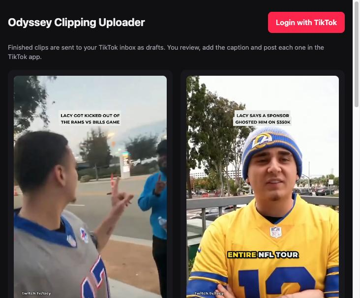
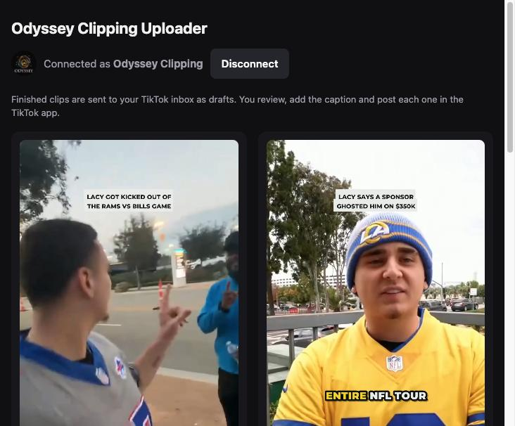
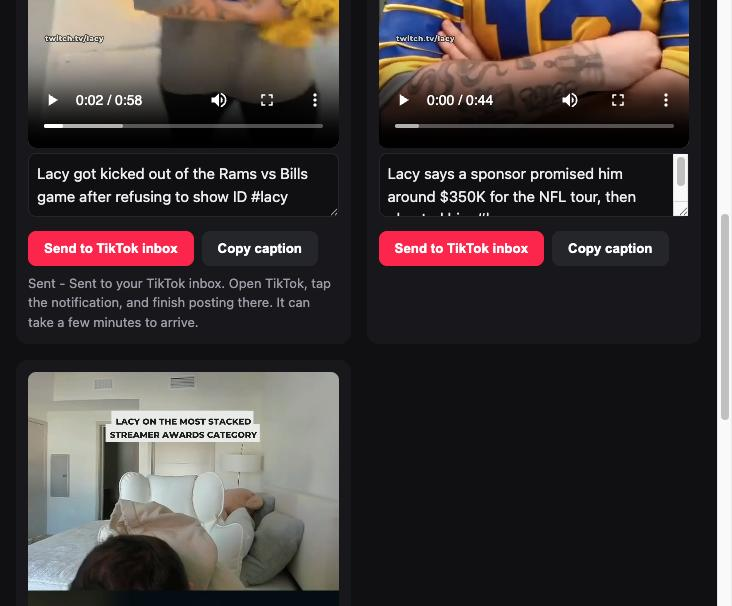

Stream highlights, clipped with permission.
Odyssey Clipping turns the best moments from live streams into short vertical videos for TikTok, with captions, a clear title and credit to the streamer. We only clip creators who invite clippers through official clipping campaigns.
What we do
Streamers go live for hours. We find the moments worth watching and make them easy to enjoy in under a minute.
Permission first
Every clip comes from a streamer's official clipping campaign, such as Lacy's campaign on clipping.net. If a creator hasn't invited clippers, we don't clip them.
Always credited
Each video names the streamer on screen, links their channel and uses the tags their campaign asks for.
Clearly labelled
Campaign clips are paid partnerships, so they're posted with TikTok's paid-partnership disclosure.
Edited, not reuploaded
We cut to the moment and reframe for vertical viewing, adding word-by-word captions and a title, rather than reposting raw footage.
How a clip is made
From a live stream to a TikTok draft, using each platform's own tools along the way.
Find the moment
We follow the streamers in our campaigns and pick moments viewers are already clipping and talking about.
Clip it on Twitch
We create the clip with Twitch's own Clip tool on our Twitch account, then download it with Twitch's download option.
Edit for vertical
The clip is reframed to 9:16 and gets captions, a title and the streamer credit, checked against the campaign's rules.
Send to TikTok
The Odyssey Clipping Uploader sends the finished video to our TikTok inbox as a draft.
Review and post
We open the draft in TikTok, add the caption and paid-partnership label, and post it ourselves.
The Odyssey Clipping Uploader
A desktop app we use to send finished clips to TikTok. It runs on our own computer and connects to our TikTok account through Login with TikTok.



How the uploader uses TikTok
We use two TikTok for Developers products, and only for our own account.
- Login Kit (
user.info.basic): shows the connected account's display name and avatar so we know which account is linked. - Content Posting API (
video.upload): uploads a finished clip to the account's TikTok inbox as a draft. Nothing is published automatically; every post is reviewed and posted in the TikTok app. - Access tokens stay on our computer and are never shared or sold. "Disconnect" removes them, and access can be revoked in TikTok's settings at any time.
- We don't add watermarks, logos or links to videos beyond the streamer credit their campaign requires.
Contact
Streamers, campaign managers and viewers can reach us any time. If you're a creator and want a clip of you taken down, tell us and we'll remove it.
- TikTok: @odysseyclipping
- Requests and questions: open an issue on GitHub
- Legal: Terms of Service · Privacy Policy